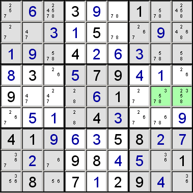

This technique is known as "hidden pair" if two candidates are involved, "hidden triplet" if three, or "hidden quad" if four.
This technique is very similar to naked subsets, but instead of affecting other cells with the same row, column or block, candidates are eliminated from the cells that hold the subset. If there are N cells, with N candidates between them that don't appear elsewhere in the same row, column or block, then any other candidates for those cells can be eliminated.
For example, consider a block that has the following candidates:
{4, 5, 6, 9}, {4, 9}, {5, 6, 9}, {2, 4}, {1, 2, 3, 4, 7}, {1, 2, 3, 7}, {2, 5, 6}, {1, 2, 7}, {8}
(The single {8} indicates that this cell already holds the value 8.) You can see that there are only three cells that have any of the candidates 1, 3 or 7. (These cells have other candidates too, but they're the ones that we can eliminate.) Three candidates with only three possible cells between them, leads to the conclusion that one of the candidates must be in each of the cells, although we can't say which is which. So, obviously, these three cells cannot hold any other value, meaning we can eliminate any other candidates for these cells.
After making the elimination in this example, we're left with:
{4, 5, 6, 9}, {4, 9}, {5, 6, 9}, {2, 4}, {1, 3, 7}, {1, 3, 7}, {2, 5, 6}, {1, 7}, {8}
I get many emails pointing out that one of the cells doesn't have 3 as a candidate, but this makes no difference at all. The important point is that there are only three cells in which three candidates appear, even if they're not all in each.
The second question I get asked, is why not make the subset 1, 2 and 7. The answer is because there are five cells containing any of these numbers, and three candidates over five cells doesn't allow any eliminations at all.
In the puzzle below, the green cells have the hidden pair 3 and 5.

Naked subsets and hidden subsets are related - I usually describe them as being opposite sides of the same coin. If a naked subset is present, then so is a hidden one, although it may be longer and so harder to spot. The opposite is also true, if a hidden subset is present, so is a naked one. They obey the following relationship:
NumberOfDigitsInNakedSubset + NumberOfDigitsInHiddenSubset + NumberOfFilledCellsInUnit = 9
or to put it another way:
NumberOfDigitsInNakedSubset + NumberOfDigitsInHiddenSubset = NumberOfEmptyCellsInUnit